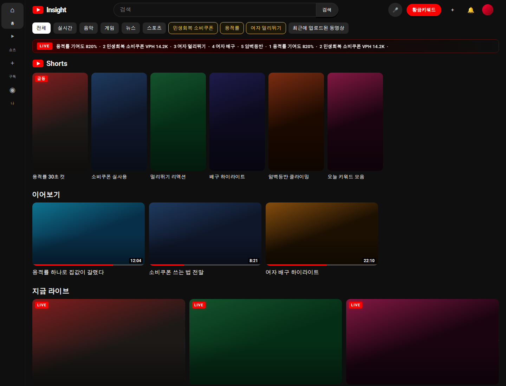
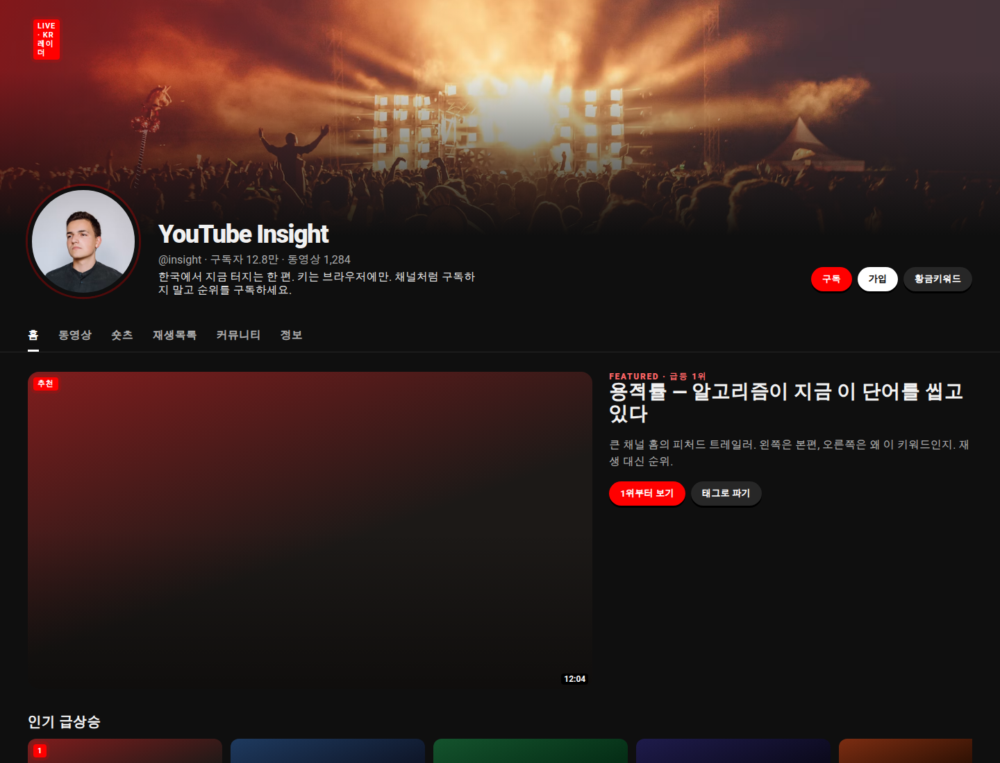
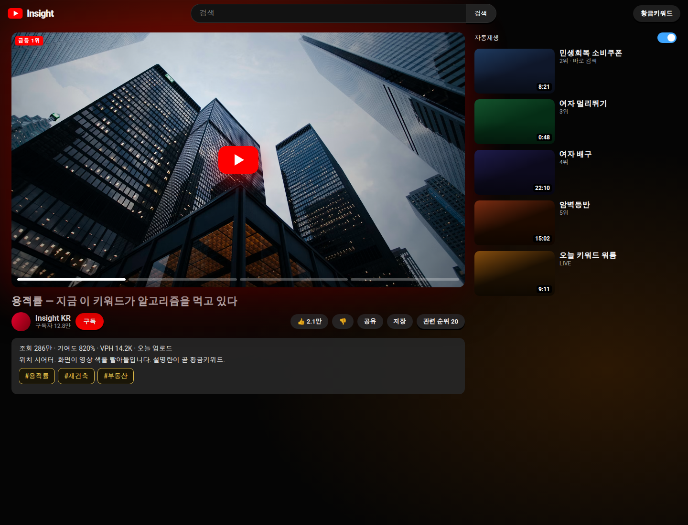
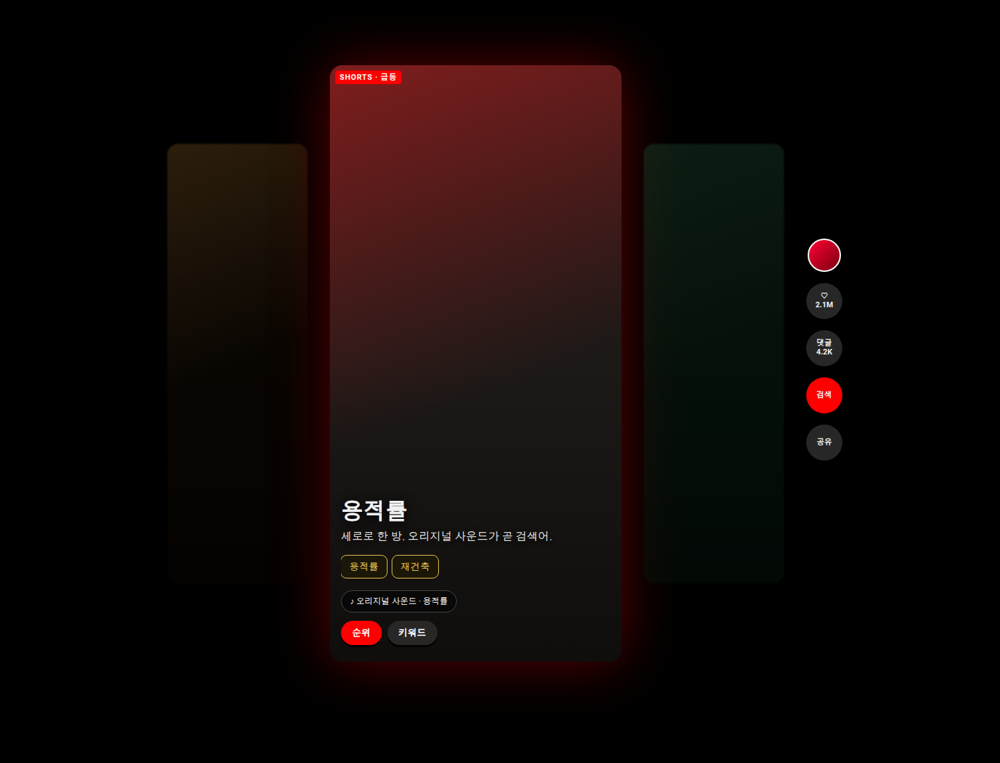
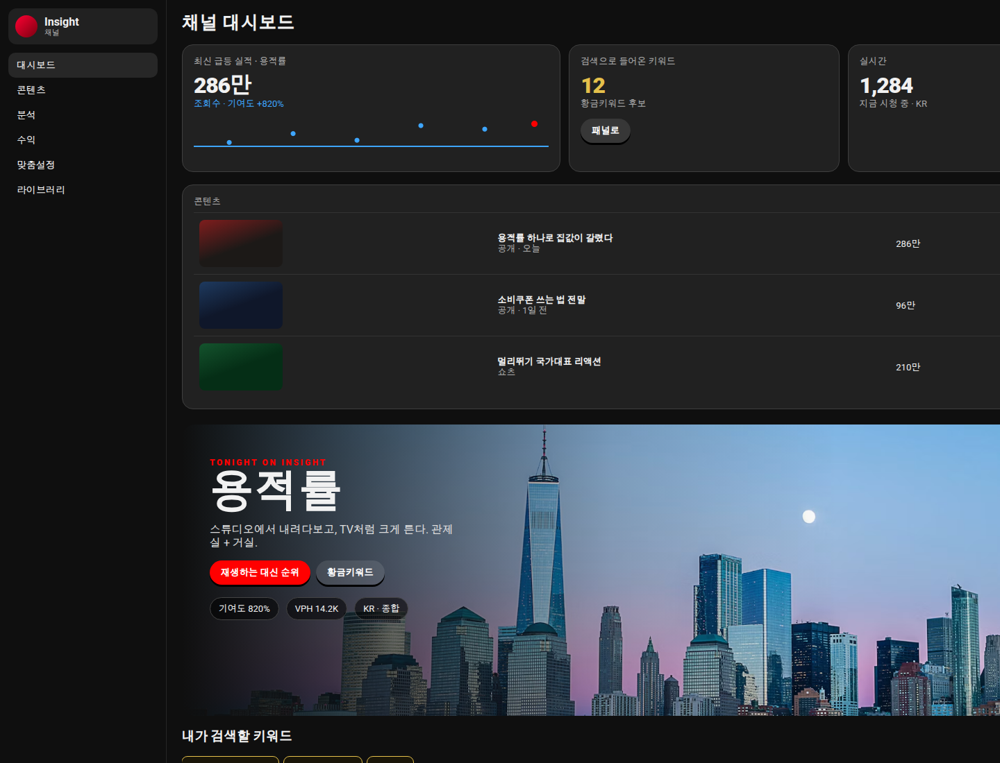

유튜브 다크를 고정한 채, 채널 벤치 파격 5종에서 레이아웃을 고르세요. 홈 맥스 / 채널 월드 / 시어터 / 쇼츠 월 / 관제+TV. 이전 밀도 버전은 yt-five.





고정 CTA — 티커 클릭 = 카테고리 영상 Top 20. 금색 버튼 = 황금키워드 패널로 스크롤. 칩 = 검색창 채움.
레퍼런스 — YouTubeLedger: wrap + 가로 스크롤 레인. tubetrend: 터치 44px, focus-visible. Analytics-Dashboard: 폰 1열 스택.
로컬: ./start-studio.sh 후 /docs/mockups/ 또는 파일을 직접 연다.